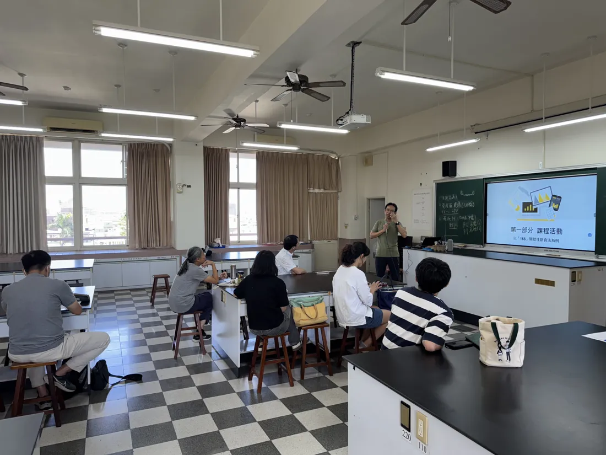
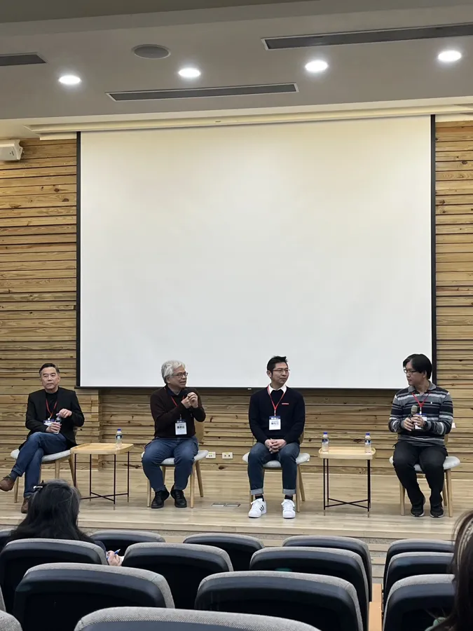
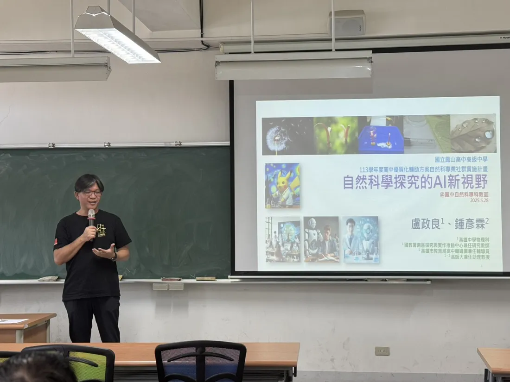

科展指導
連續多年指導學生參加高雄市與全國科展高中組物理科：104 年第 55 屆、114 年第 65 屆全國科展物理科第一名，另有第二、三名與佳作；高雄市科展物理科第一名多次。
六條主線，彼此串連。
連續多年指導學生參加高雄市與全國科展高中組物理科：104 年第 55 屆、114 年第 65 屆全國科展物理科第一名，另有第二、三名與佳作；高雄市科展物理科第一名多次。
2011 年起培訓雄中 TYPT 隊伍，2024 年獲二金、總冠軍，歷年多名學生入選國手。並協辦物理辯論賽，建立校隊甄選與計時工具。
參與日本立命館高校主辦的 International Collaborative Research Project，帶雄中學生與熊本北高校等海外夥伴進行跨國研究；並帶隊參加臺灣國際科展。
2026 年帶領雄中團隊加入「南方五校－成大太空課程實作計畫」，讓高中生走一次 MDR→FRR 的太空任務流程，2027 年 1 月放球。
2023 年起在各校與研討會分享 AI 輔助探究、批改與評量；2025 年於 KSASF 國際科學營分享 AI‑Assisted Physics Instructional Design。用 AI 把教學需求做成網站。
製作 AI 教育與物理解題短影音：AI 進教室的教師須知、學生資料倫理、分科測驗物理詳解。【待確認：頻道名稱與連結】

「AI 進教室，不是取代老師，而是讓老師把時間拿回來。」但每一步都要守住學生尊嚴與學習品質。
「診斷比正解重要。」學生需要的不是再看一次標準解法，而是有人指出他真正卡住的那一步。
段考複習、錯題診斷、探究課程——每個作品都來自課堂上真的發生的問題。
上線即可使用、免安裝；學生打開就能練，老師拿去就能教。
經營共備社群，讓一個老師的嘗試成為更多教室的資源。
全部公開上線、可直接使用。
教物理 21 年；開放教室做示範教學，帶多元選修「科學實作專題與國際科學交流」。
與高師大合開「科學思維」課程，參與師資培育。
研究領域：原子物理、相對論性量子力學。碩士亦於臺大物理所。
探究與實作學會秘書長、中華民國物理教育學會常務理事 【待確認：目前職稱】
高雄市高中輔導團兼任輔導員；高雄市跨校自然共備基地班召集人；BBC 知識專欄作家。

AI × 物理教學共備平台：社群老師的 AI 教學案例、互動模擬、探究命題與教師工作流，可搜尋、篩選、投稿。
前往 → INQUIRY & PRACTICE跨校教師共備社群：活動訊息、共備成果與社群資源的入口。
前往 →高雄探究共備：定期舉辦跨校共備聚會（如 2026.6.26 場次），並以回饋表單持續調整。
2023 年以來受邀分享 60 餘場，以下為部分場次。
